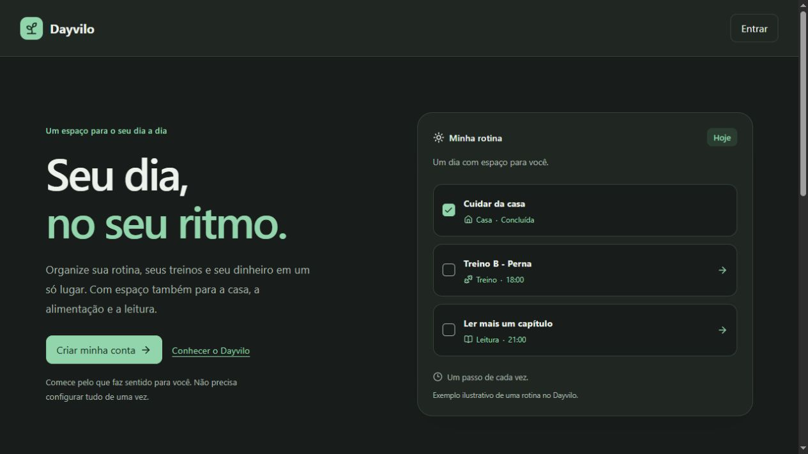
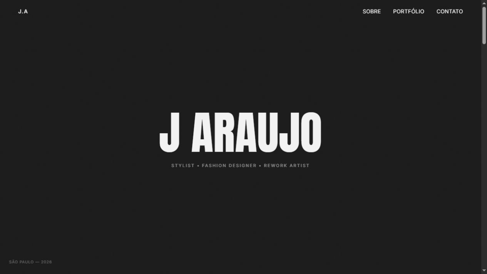

Dayvilo
Um espaço para organizar a rotina, os treinos e as finanças, com áreas também para casa, alimentação e leitura. Cada parte do dia encontra seu lugar.
Visitar Dayvilo (abre em nova aba)OLÁ, EU SOU
Desenvolvedor de software.
Gosto de entender desafios, conectar ideias e construir experiências digitais. A curiosidade me leva além.
Conheça meus projetos02 / PROJETOS
Do dia a dia à expressão criativa.
Conheça dois projetos que estou construindo.

Um espaço para organizar a rotina, os treinos e as finanças, com áreas também para casa, alimentação e leitura. Cada parte do dia encontra seu lugar.
Visitar Dayvilo (abre em nova aba)
Portfólio de um stylist, fashion designer e rework artist. Uma apresentação visual dos seus trabalhos em shows e videoclipes, com espaço para sua identidade e contato.
Visitar portfólio (abre em nova aba)03 / TECNOLOGIAS
JavaScript e MySQL são as tecnologias com que mais gosto de trabalhar. A partir delas, sigo explorando diferentes áreas do desenvolvimento.
LINGUAGEM
Uma das linguagens que mais uso no dia a dia para transformar ideias em código.
BANCO DE DADOS
Faz parte do meu trabalho com dados: organizar informações e conectar o que uma aplicação precisa guardar.
TAMBÉM FAZEM PARTE
DESTA CONSTRUÇÃO
INTERFACE
Estrutura, identidade visual e adaptação deste portfólio para diferentes tamanhos de tela.
VERSIONAMENTO
Histórico de alterações, commits por etapa e publicação do portfólio pelo GitHub Pages.
04 / SOBRE MIM
Desenvolvedor. E mais um tanto.
Gosto de conhecer pessoas,
trocar ideias e construir coisas.
Sou desenvolvedor de software e estou aberto a explorar diferentes áreas da tecnologia. Hoje, essa vontade de construir aparece em projetos como o Dayvilo e o portfólio do J Araujo.
Fora do código, gosto de futebol, muay thai e de ouvir música. Também gosto de sair, conversar e conhecer gente nova. Esse lado faz parte de quem eu sou tanto quanto os projetos que você vê por aqui.
05 / CONTATO
Tem um projeto em mente, uma oportunidade ou quer trocar uma ideia sobre tecnologia? Vou gostar de conhecer você.